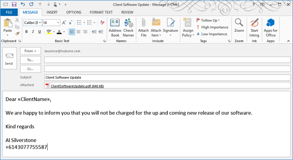

|
<< Click to Display Table of Contents >> Navigation: OnePractice > Mail Template Manager > Using the OnePractice Mail Template Manager > Creating email Templates > Manual Creation through Outlook |
Email templates are stored in the same SharePoint Document Library as are templates used in the OnePractice Template Manager application. To navigate to this library login to your SharePoint OnePractice Document Center, click the Settings Cog > Site Contents > Modern Practice Templates.
In this folder, any “.msg” file you save will be presented by the Email Template Manager as a candidate to be used in the composition of a new email.
To create a new email template directly from Outlook:
1.Select “New Email” and create your template email content including adding any attachments you want to be included in the template.
2.Be sure to correctly apply the Template Field format rules as laid out later in the document. NB: You can use the Template Manager Field Builder to correctly create template fields. This is located in the Template Manager software on your OnePractice Document Center in SharePoint.
3.Click the FILE Tab and select “Save As…”
4.Select the default save option and save to your local machine (Outlook Message Format – Unicode).

5.Drag and drop the file into your Modern Practice Template Document Library.
6.The file will now be available in the Template Explorer panel once you have refreshed its contents.